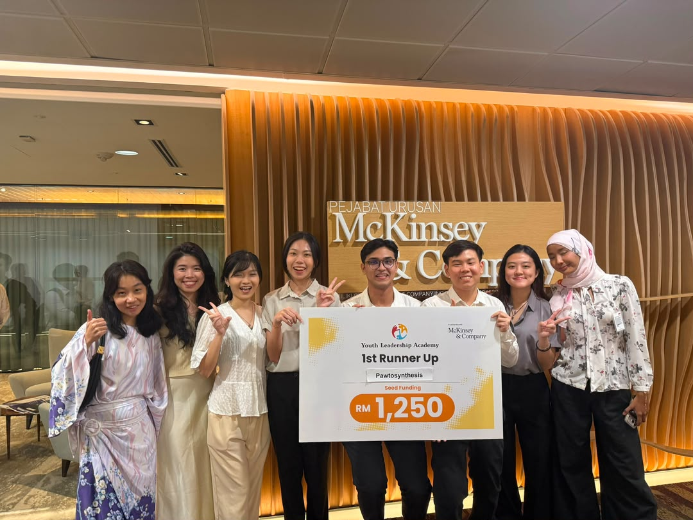
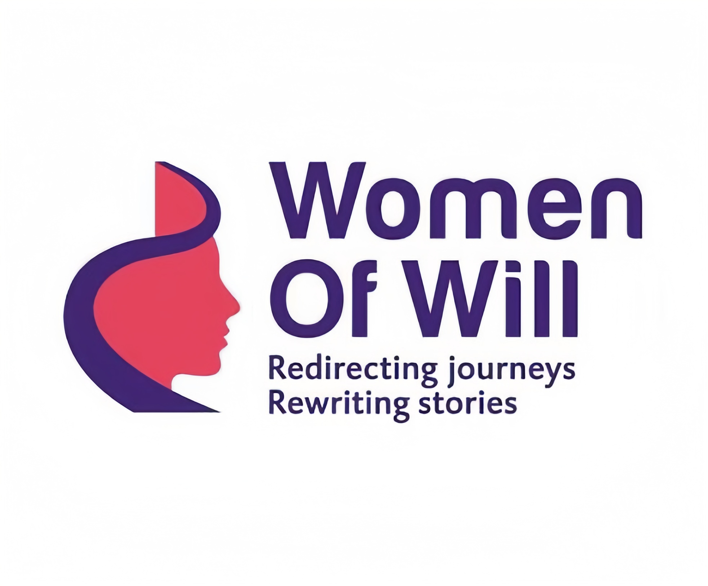

Who we are
A student-led circle of care for rivers, makers, and pets.
Pawtosynthesis is a university student-led innovation project under the YLA McKinsey & Company Programme. Today, we turn water hyacinth an invasive river species into verified pet-safe, natural, biodegradable and plastic-free pet toys, specially handwoven by underserved communities.
Our vision is to create a wider range of sustainable, earth-friendly pet products for pawrents.
Our Team
Meet the people behind the paws.

Our team is a student-led group that cares about sustainability, thoughtful design, and making things that are useful for both pets and people. We combine research, creativity, and hands-on making to turn natural materials into products that are practical, safe, and better for the environment. What started as a small idea to make use of overlooked fibres has grown into a project focused on creating toys that are not only enjoyable for pets but also respectful to the people and places behind them. We want our work to be simple, honest, and meaningful in the way we source, design, and share it.
Our Weaving Partners
Made with communities, not just materials.

We work with weaving communities who have long used natural fibres to create strong, beautiful, and practical handmade products. Through these partnerships, we turn local materials into toys that carry both tradition and purpose. Each item is woven carefully and finished with attention to quality, so the craft remains visible while also fitting into a more sustainable way of making. We value these collaborations because they support skilled makers, celebrate local knowledge, and help create products that are meaningful for people, pets, and the environment.